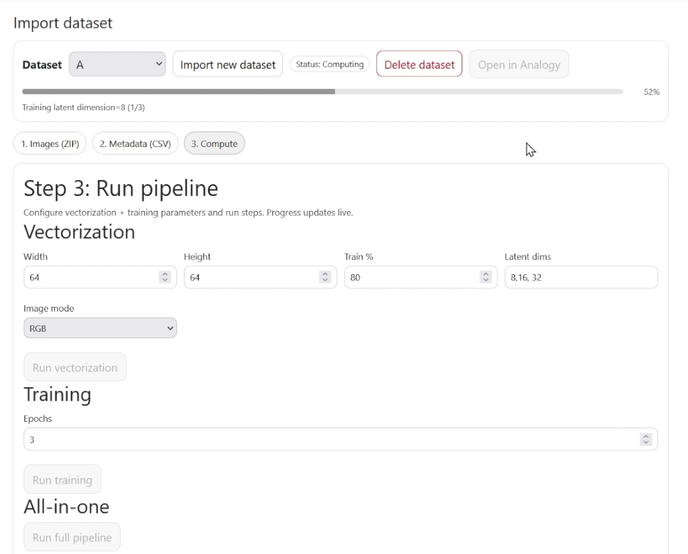
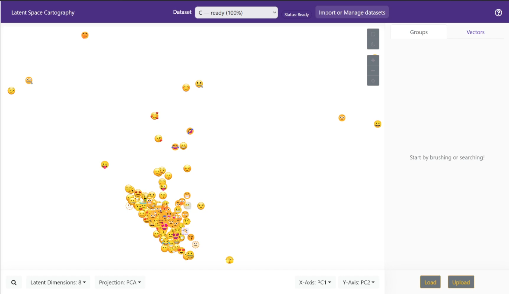

The original Latent Space Cartography was a research tool designed to create and explore visual projections of vector space embeddings. While it contained core algorithms for projecting high-dimensional data, the workflow was static. Users had to manually prepare data and execute individual scripts with hardcoded parameters to generate visualizations. It primarily focused on image data, with no native code included for processing text embeddings.
Fork Objectives
This fork re-engineers the project into a dynamic, full-stack web application.
Dynamic & Live Workflow (Primary Goal): The core objective was to eliminate the manual, script-based pipeline. In this fork, users interact with a live GUI to ingest data, train models, and generate projections in real-time without touching code or restarting the server.
Modernization: The codebase has been ported from Python 2.7 / TensorFlow 1.x to Python 3.12+ and TensorFlow 2.x / Keras 3.
Architecture Refactor: Replaced external MySQL dependencies with self-contained SQLite and implemented an asynchronous Job/Queue system to manage heavy computational tasks.
2. Key Differences & Features
Text Processing Evolution
Original Upstream: Contained no logic for ingesting or processing text embeddings.
Fork: Implemented a generic text pipeline (import_text_job). The system supports importing any standard text embedding file (e.g., .txt with word vectors) via the UI, enabling users to analyze custom NLP models dynamically.
Dynamic Projection Jobs (t-SNE & PCA)
Static vs. Dynamic: While the original repository contained code for t-SNE and PCA, the logic was locked inside static scripts with hardcoded parameters.
Job Implementation: This fork refactors those algorithms into parameterized Jobs (run_pca_job, run_tsne_job).
User Control: Parameters that were previously static (e.g., t-SNE perplexity, iterations, or PCA dimensions) are now exposed in the UI, allowing users to tune projections experimentally for every dataset.
Additional Features
Emoji Crawler: A dedicated testing tool (deploy/emoji/crawler.py) that scrapes and generates verifiable image datasets to validate the pipeline.
UI Overhaul:
Dataset Picker: A dashboard for managing multiple datasets.
Live Progress: Real-time feedback bars for vectorization, training, and projection jobs.
Status Badges: Visual indicators of data processing states.

3. Technical Stack
Component
Upstream (Original)
GMK-TU Fork
Language
Python 2.7
Python 3.12+
Backend Framework
Flask 0.x
Flask 3.x
ML Engine
TensorFlow 1.x / Keras 2
TensorFlow 2.16+ / Keras 3
Database
MySQL
SQLite3
Frontend
Vue.js / Legacy Webpack
Vue.js 2.6 / Webpack 5
Numerical Libs
Numpy (Legacy)
NumPy, Pandas, Scikit-Learn 1.4+
4. Installation & Setup Guide
Prerequisites
Python: 3.10 or higher
Node.js: v18 or higher (LTS recommended)
Step 1: Backend Setup
Clone the repository and navigate to the root directory.
Create a virtual environment:
python -m venv venv
source venv/bin/activate # On Windows: venv\Scripts\activate
Install dependencies:
pip install -r requirements.txt
Step 2: Client Build & Execution
The application logic, including the server entry point (server.py), is located within the client folder in this fork.
Navigate to the client directory:
cd client
Install Node dependencies:
npm install
Option A: Production / Standard Use
To build the static assets and run the standard server:
Build the Vue.js frontend:
npm run build
This compiles the Vue assets into the client/build/ directory.
Execute the Python server:
python server.py
Option B: Development
To run the frontend with hot-reloading enabled during development:
Execute the development server:
npm run dev
Ensure the Python backend is running separately (via python server.py inside the client folder) to handle API requests.
Access:
Open your browser and navigate to http://localhost:5000 (or the port specified by the dev runner).
5. User Workflows
Workflow A: Image Latent Space (VAE Pipeline)

This workflow transforms raw images into a navigable latent space using a Variational Autoencoder.
1. Data Ingestion
Action: Upload a ZIP file containing images via the “New Dataset” UI.
System Action: Unzips images to a staging area in ./data/{dataset_id}/.
2. Job: Vectorization
Endpoint: server.make_dataset_job
Description: Resizes images and converts them to HDF5 arrays.